Sweep Line
程度★★ 難度★
Sweep Line
「掃描線」是計算幾何領域的基礎手法，可以用來解決許多計算幾何的問題，有如圖論中的BFS與DFS一樣經典。它並不是一個物品，而是一個概念。
平移的掃描線
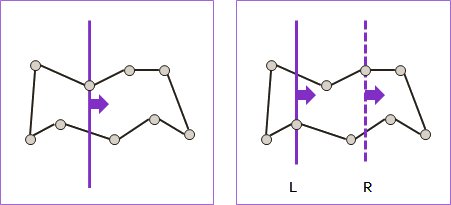一條（或兩條）無限長平行線，沿其垂直方向不斷移動，從畫面一端移動到另一端，只在頂點處停留。
實作時，通常是先按座標大小排序所有頂點，然後以兩索引值，紀錄平行線的位置在哪個頂點上面。兩條平行線，一條為主，穿越整個畫面；一條為輔，跟著主線的狀況進行平移。這是陰陽的道理。
UVa 920 972
旋轉的掃描線
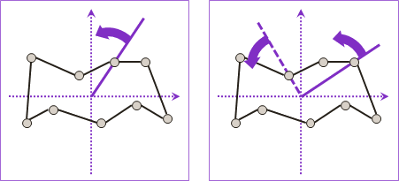一條（或兩條）從原點射出的射線，做360°旋轉，只在頂點處停留。
實作時，通常是先按極角大小排序所有頂點，然後以兩索引值，紀錄射線的位置在哪個頂點上面。兩條射線，一條為主，轉過整個畫面；一條為輔，跟著主線的狀況進行平移。這是陰陽的道理。
UVa 270 10691 10927 11529 11696 11704 ICPC 3259 4064
用Sweep Line設計演算法時的步驟
說穿了，掃描線的基本精神就是：先排序、再搜尋。
在二維平面上，有一個重要的特性就是「區域性」。比如說，兩點之間，會被距離更近的點隔開。
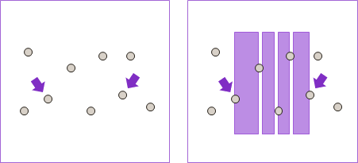排序的目的，也就是建立「區域性」。有了「區域性」，搜尋的條件就更精確了，搜尋的速度也就更快了。
觀察問題是否有「不重疊」、「不相交」、「間隔」、「相聚」之類的性質。 然後選定平移的或者旋轉的掃描線，進行掃描。 換句話說，排序所有的頂點，進行搜尋。
Sweep Line可以解決的問題
平移的掃描線 Closest Pair 找出所有最近點對 Segment Intersections 找出所有線段的所有交點 Polygon Intersection 找出兩個多邊形的交集、聯集、差集 Voronoi Diagram Delaunay Triangulation 旋轉的掃描線 Convex Hull 找出凸包
旋轉的掃描線：極角排序（Sorting Points by Polar Angle）
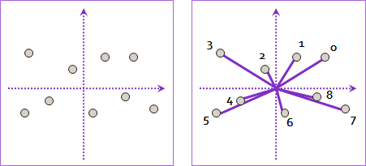Rotating Caliper
程度★★ 難度★
Rotating Caliper
「旋轉卡尺」也是計算幾何領域的基礎手法，它並不是一個物品，而是一個概念。參考資料：http://cgm.cs.mcgill.ca/~orm/rotcal.html，中文翻譯：http://blog.csdn.net/ACMaker/archive/2008/10.aspx。
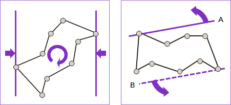平面上的圖形做360°旋轉，並以兩條垂直線，隨時從左右夾緊圖形，量測寬度、找到極端頂點。
切換視點，就變成：兩條無限長平行線，做360°旋轉，嘗試夾住平面上的圖形。
實作時，通常是以兩索引值，紀錄平行線的位置在哪個頂點上面。兩條平行線，一條為主，轉過整個畫面；一條為輔，跟著主線的狀況進行鬆緊。這是陰陽的道理。
實作時，只需轉180°即可。轉半圈，兩條平行線對調，效果同360°。
說穿了，旋轉卡尺的基本精神就是：窮舉斜率，判斷目標對象有多斜。
UVa 303 10173 10416 11243
Rotating Caliper可以解決的問題
Farthest Pair 找出所有最遠點對 Convex Polygon 凸多邊形的各種問題，例如求直徑、合併、相交等等 Bounding Box
事實上旋轉卡尺與平移的掃描線互為點線對偶，所以平移的掃描線能解決的問題，旋轉卡尺也能解決，反之亦然。
旋轉卡尺：凸包（Convex Hull）
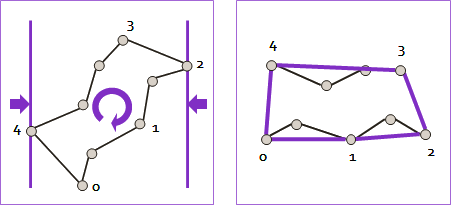使用旋轉卡尺夾住圖形，卡尺夾不進的地方，剛好是該圖形的凸包。因此，旋轉卡尺適合用於凸包、凸多邊形的相關問題。
旋轉卡尺夾到的頂點順序，就是凸包的頂點順序。
迴圈部分亦可採一主一副的形式：每窮舉一個頂點，就立即找出對頂的點。
Closest Pair
程度★★ 難度★★
Closest Pair
一群點當中，距離最近的兩個點叫作「最近點對」。
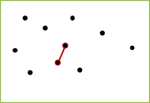演算法（Enumerative Method）
窮舉法的時間複雜度是O(N^2)，可以找出所有的最近點對。
演算法（Enumerative Method）
此處再介紹另外一種窮舉法，時間複雜度仍是O(N^2)，不過會比直接窮舉全部點對的方法快上許多，也比後面要談的分治法快上許多。
一、先排序所有點，以X座標為主，Y座標無所謂。 二、從左往右掃，依序窮舉各點作為左端點。 甲、從左端點開始往右掃，依序窮舉各點作為右端點。 乙、若左右兩點距離差太遠、超過目前發現的最近點對距離， 就可以停止窮舉右端點。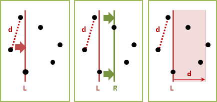
預先排序，就容易裁減搜尋範圍。預先按照水平座標排序，再以水平距離裁減搜尋範圍。這招非常好用。
實作時，減少sqrt函式的呼叫次數，盡量紀錄距離的平方，可以減少計算時間。避免直接排序原資料，複製一份指標或索引值來排序，也可以減少計算時間。
也可以改為先窮舉右端點、再窮舉左端點。
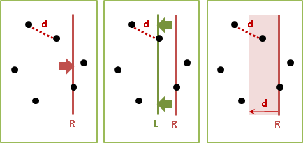最差情況是所有點都在同一條垂直線上，將會窮舉到所有點對，完全無法裁減搜尋範圍。
UVa 10245 10750 11378
演算法（Sweep Line）
要避免最差情況，有個想法是：再將所有點依照垂直方向排序。如此一來，時間複雜度得降低為O(NlogN)。
一、位於右端點左方、距離d以下的點，才有可能形成最近點對。也就是以右端點為圓心、左半圓涵蓋的點（包含邊界）。照理來說，我們只需要檢查半圓範圍裡面的點。
運用左掃描線做為輔助，跟隨右掃描線亦步亦趨，我們得以輕易的過濾出水平距離d以下的點，但是無法進一步過濾出半徑距離d以下的點。
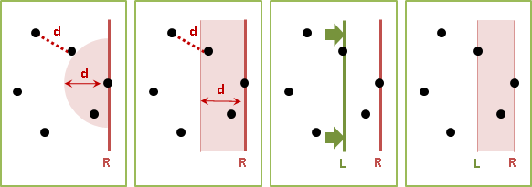折衷的方式是依照Y座標排序水平距離d以下的點，然後運用二分搜尋法找到右端點、再找到Y座標比右端點稍大、稍小的點──這些點很可能就在半圓之內。
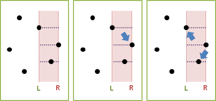二、右端點左方的點，兩兩之間的距離，至少是d。
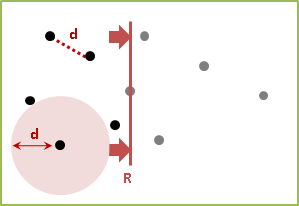點與點之間無法太過密集擁擠，能夠組成最近點對的左端點並不多。水平距離d以下的點進行排序，以Y座標為主、X座標為輔；只需要檢查右端點的前兩點與後兩點、作為左端點，就能囊括所有最近點對。最極端的情況，是以右端點為中心、左半正方形涵蓋的點（包含邊界）。
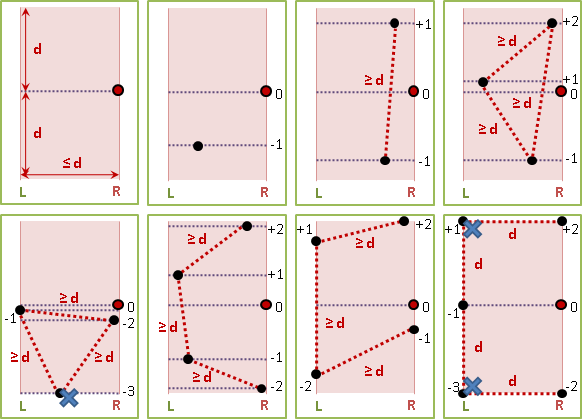一、預先排序所有點，X座標為主，Y座標為輔。 二、建立一棵二元樹（AVL Tree + thread）， 儲存右端點的左方、水平距離小於等於d的點。 二元樹排序以Y座標為主，X座標為輔。一開始是空的。 d是當下的最近點對距離。一開始是無限大。 三、右掃描線依序窮舉各點作為右端點。 甲、二元樹刪除與右端點水平距離大於d的點們。 （左掃描線視情況往右移動。） 乙、二元樹加入右端點。 丙、二元樹遍歷右端點的前兩點與後兩點，嘗試更新最近點對。
時間複雜度。排序O(NlogN)。掃描線O(N)。二元樹總共刪除N個點O(NlogN)；總共加入N個點O(NlogN)；總共遍歷6N個點O(N)。
【待補程式碼】
演算法（Divide and Conquer）
時間複雜度是O(N * (logN)^2)，可以找出所有的最近點對。原理是把平面切割成左右兩側，答案分為「最近點對在左側」、「最近點對在右側」、「最近點對橫跨兩側」等三種情形。先將左側與右側分別遞迴求解之後，再利用左側與右側的答案，快速的算出橫跨兩側的答案。
Preprocessing: 一、排序所有點，以X座標為主，Y座標無所謂。O(NlogN) 二、檢查是否有共點。如果有，就找出所有共點，演算法結束。O(N) Divide： 把所有點分為左右兩側，左側、右側的點數盡量一樣多。 Conquer： 左側、右側分別遞迴求解。 Merge： 一、利用左側、右側的最佳解d，求出橫跨兩側的解： 甲、首先找出靠近中線的點，水平距離小於d、包含d。O(N) （小於d、不包含d，則只找出其中一組最近點對。） 乙、排序這些點，Y座標為主，X座標為輔。O(NlogN) 丙、每一個點都找其上方鄰近的點，看看能不能形成最近點對。 只需檢查至後三點。O(N*3) = O(N) 二、答案為左側、右側、橫跨兩側，三者當中的最佳解。
以下提供釋例。畫面上有一些點。
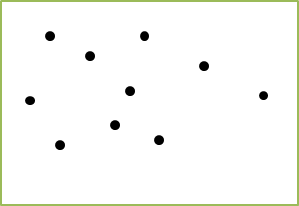把點分為左側與右側，點數盡量一樣多。左側與右側的交界處可能會銜接，也可能不會銜接。左右兩側通常是不一樣寬的。
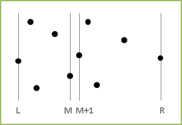左側、右側分別遞迴求解，最後求得這兩種情況下的最近點對。最近點對的距離為d。
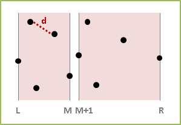左側的每一個點，半徑d以內的範圍（不包含邊界），不會有其他左側的點存在，只可能出現另一側的點。右側亦如是。
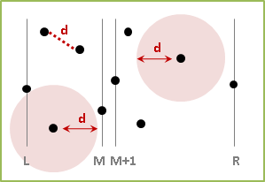要找出橫跨兩側的點對，可以從左側的右邊線，往左距離d以內的範圍裡（包含邊界）的這些點，有可能與右側的點形成最近點對。
也可以以右側的左邊線為主。
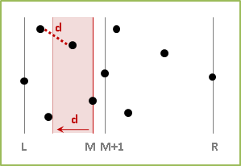從左側的右邊線，往右距離d以內的範圍裡的這些點，則是可能的另一頭端點的範圍。
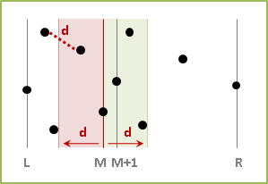要找出橫跨兩側的最近點對，只要依序窮舉左側右邊界距離d以內、位於左側的點，作為左端點；再找左側右邊界距離d以內、位於右側的點，作為右端點。
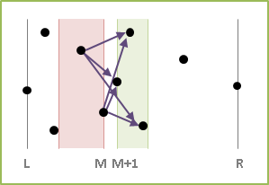從這裡開始衍生兩種實作方式：
一、最容易理解的方式，是從下往上掃描左端點；針對每個左端點，找到合適的右端點。右側之中，點與點之間的距離至少是d。運用先前的分析手法，我們只需檢查掃描線的中下兩點、上兩點，作為右端點，就能囊括所有橫跨兩側的最近點對。
此處省略分析過程，讀者可以自行畫圖觀察。
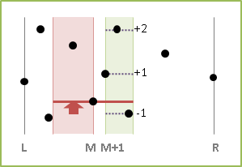實作時，運用右側掃描線做為輔助，跟隨左側掃描線亦步亦趨，就能快速找到中下兩點、上兩點，而不必使用二分搜尋法。
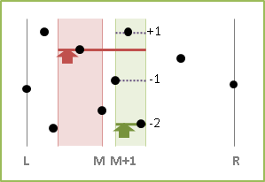二、另一個難以理解、但是容易實作的方式，是把範圍內的這些點全部混在一起，不分左右，然後從下往上掃描。先窮舉下端點，再尋找上方鄰近的點作為上端點，檢查是否形成最近點對。
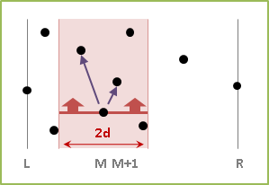最多只需要檢查下端點的後四點，就一定囊括所有橫跨兩側的最近點對。
此處省略分析過程，讀者可以自行畫圖觀察。蠻複雜的喔！可以先將左側、右側的分布情形分開畫好，再將左右兩側拼在一起。
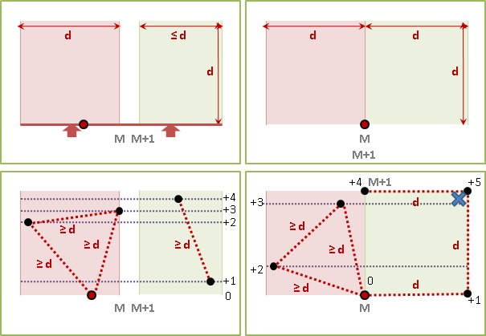更進一步。第四點一定與同側的另外一點形成最近點對，之後還是能檢查到，所以不必檢查第四點、只需要檢查後三點。
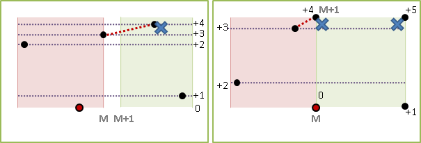以上圖例都是掃描線掃中左側的點，讀者可以自行分析掃描線掃中右側的點的所有情況。大功告成。
教科書通常只談到後五點；此處更加深入分析，從後五點逼近至後三點。儘管推理過程讓人感覺似乎很有學問，但是執行速度仍舊不如窮舉法。這種鑽牛角尖又不切實際的學問，不如不學。
如果在Merge階段，以Merge Sort將所有點重新依照Y座標排序，時間複雜度可以降到O(NlogN)。然而執行Merge Sort的額外負擔實在太大，通常會比原來的方法慢上許多。
如果一開始將所有點複製一份，先以Y座標排序，那麼在遞迴途中就不用每次都排序。如此會使時間複雜度暴增為O(N^2)，甚至比窮舉法還慢。
Farthest Pair
程度★★ 難度★
Farthest Pair
一群點當中，距離最遠的兩個點叫作「最遠點對」。
窮舉法的時間複雜度是O(N^2)，可以找出所有的最遠點對。
使用旋轉卡尺，時間複雜度是O(NlogN)。
想法
距離變遠，就是擴張。無論是擴張兩點連線，或者是擴張邊界，距離都是變遠。
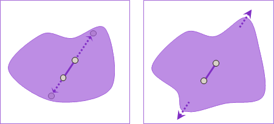要找最遠點對，可以使用擴張邊界的概念。擴張邊界直到極限，邊界便會碰觸到最偏遠的點，最後形成凸包。
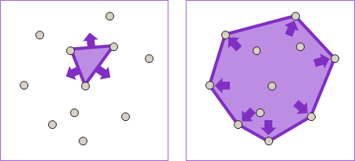因此，最遠點對一定是凸包的對角線。就如同日常生活中，邊邊角角的寬度是最寬的、最容易卡到。
也許這段論述太過抽象、不夠嚴謹。來詳細推敲一番吧！
凸多邊形範圍內，最遠的距離是對角線距離。
換句話說，凸多邊形範圍內任一線段，必定短於、等長於某一條對角線。此處改用擴張兩點連線的概念進行說明。
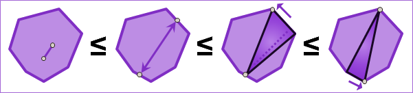一、凸多邊形範圍內，任取兩點。
二、延長兩點連線，直到邊界。
三、挪動一點至頂點，盡可能遠離垂足。
四、挪動另一點至頂點，同上。
藉由此性質，以旋轉卡尺，窮舉最長對角線的斜率，量測最長對角線的長度，就能輕鬆找到最遠點對。
凸多邊形的最長對角線們，斜率皆不同。
同一個斜率，如果有兩條以上的最長對角線，就會產生矛盾──以兩條最長對角線描出平行四邊形，可以發現平行四邊形的對角線更長。凸多邊形範圍內一定可以順利描出平行四邊形，請參考凸的定義。
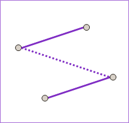凸多邊形範圍內，同一個斜率，最多只有一條最長對角線。因此，同一個斜率，旋轉卡尺只能夾到一條最長對角線。
凸多邊形的最長對角線數目，不超過頂點數目。
平面上N個點，其凸包最多有N個頂點。隨著卡尺旋轉，每一個頂點，都可能作為下一條最長對角線的端點，可以推理出凸包最多有N條最長對角線，此時形成正多角星。
平面上N個點的最遠點對，最多只有N組。
演算法
一、求凸包，過濾出可能是最遠點對的點。O(NlogN) 二、旋轉卡尺，找出最長對角線，即是最遠點對。O(N)
PKU 2187 UVa 11012
Segment Intersection
程度★★ 難度★★
判斷線段們是否相交
使用窮舉法窮舉兩線段，時間複雜度是O(N^2)，可以求出所有交點。
使用平移的掃描線，先將線段排序，再從左到右依序窮舉各線段，判斷相交，時間複雜度為O(NlogN)。
如果線段沒有相交，無論掃描線如何移動，線段的上下順序都是固定的。如果線段相交，那就一定是上下相鄰的線段相交了。
隨著掃描線移動，線段動態地增加減少，線段的上下順序是固定的──可以使用二元搜尋樹，紀錄掃描線當下掃中的線段。
一、排序所有端點： 甲、X座標，從小到大。 乙、Y座標，從小到大。 丙、左端點先於右端點。 丁、下端點先於上端點。 二、從左往右掃描端點： 甲、若為左端點，把線段放入二元搜尋樹。 判斷此線段、上一條線段是否相交。 判斷此線段、下一條線段是否相交。 乙、若為右端點，從二元搜尋樹拿出線段。 判斷上一條、下一條線段是否相交。
由於set不像vector一樣會自行搬動記憶體位址，所以可以將插入時的iterator記錄起來，稍後刪除時就能直接取用iterator，省下一次搜尋。
Timus 1469 ICPC 4125
找出線段們所有交點
一、建立priority queue，排序所有端點： 甲、X座標，從小到大。 乙、Y座標，從小到大。 丙、左端點先於右端點。 丁、下端點先於上端點。 二、從左往右掃描端點暨交點： 甲、若為左端點，把線段放入二元樹。 計算此線段、上一條線段的交點，交點放入priority queue。 計算此線段、下一條線段的交點，交點放入priority queue。 乙、若為右端點，從二元樹拿出線段。 計算上一條、下一條線段的交點，交點放入priority queue。 丙、若為交點，顛倒所屬線段在二元樹當中的順序。 回、甲乙丙皆得小心處理多線共點的情況。
每次求得的交點，一定出現在目前的掃描線右側，所以不必擔心掃描線已經錯過了交點。
【待補程式碼】
Shamos-Hoey O(NlogN) Bentley-Ottmann O(NlogN + KlogK) = O((N+K)*logN) K < C(N,2) < N^2 Chazelle & Edelsbrunner O(NlogN + K) Balaban O(NloglogN + K)
Point-Line Duality
程度★★ 難度★
點線對偶
http://3glab.cs.nthu.edu.tw/~spoon/courses/CS631100/Lecture09_handout.pdf
http://people.ofset.org/~ckhung/b/ma/duality.php
二維平面上的點和線，可以等價地轉換成線和點。主要有兩種轉換方式，一般我們常用的是斜率與截距。
一、點 (a,b) 轉換成直線 y = ax - b 二、點 (a,b) 轉換成直線 ax + by = 1
附帶一提，Hough Transform是把二維座標轉換成極座標。